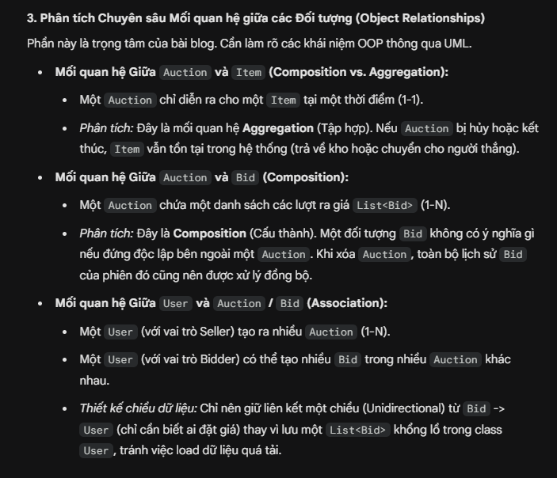
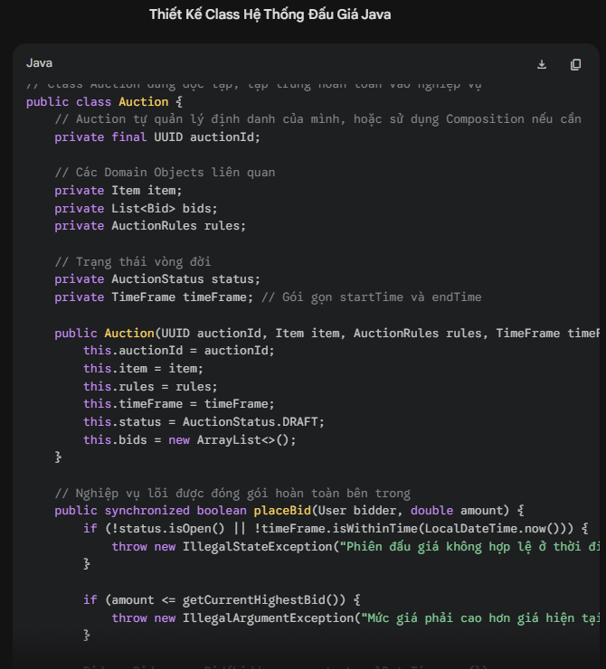

BÁO CÁO BÀI TẬP: ỨNG DỤNG AI TẠO SINH TRONG SÁNG TẠO NỘI DUNG SỐ
Dự án: Bài Blog Kỹ thuật - "Thiết kế Hệ thống Đấu giá bằng Java OOP: Phân tích kiến trúc Class Auction và Entity"
Định dạng: Bài viết Blog (Article)
Công cụ AI sử dụng: Google Gemini (Văn bản), Microsoft Designer (Hình ảnh), Canva (Hỗ trợ thiết kế & Layout)
I. Ghi lại chi tiết quá trình sử dụng AI (Quá trình sáng tạo & Tích hợp)
1. Sử dụng Google Gemini (Tạo nội dung văn bản)
Mục tiêu: Xây dựng dàn ý và viết nháp các khái niệm OOP phức tạp.
- Prompt 1 (Lên dàn ý): "Đóng vai một Software Engineer Senior. Hãy lập dàn ý chi tiết cho một bài tech blog giải thích về cách thiết kế các Class trong một hệ thống đấu giá (Auction System) bằng Java. Dàn ý cần tập trung vào việc phân tích mối quan hệ giữa các đối tượng."
- Kết quả nhận được: Gemini đưa ra một dàn ý khá đầy đủ bao gồm Giới thiệu, Phân tích yêu cầu, Thiết kế các class (User, Item, Bid, Auction), và Kết luận. Tuy nhiên, ở phần thiết kế class, AI đề xuất mô hình thừa kế chung chung.

|  |
- Prompt 2 (Viết nháp nội dung sâu): "Hãy viết chi tiết phần phân tích mối quan hệ giữa class Auction và class Entity. Hãy đưa ra ví dụ code Java minh họa việc class Auction kế thừa (extends) từ class Entity để tái sử dụng code."
- Kết quả nhận được: Gemini tạo ra một đoạn code Java cho thấy public class Auction extends Entity. Nó giải thích rất logic về việc kế thừa id, ngày tạo, v.v.

|  |
- Cách tôi chỉnh sửa và tích hợp (Đóng góp cá nhân > 50%): * Đây là phần tôi can thiệp mạnh nhất để tạo ra giá trị. Dựa trên kiến thức thực tế khi làm dự án, tôi nhận ra đề xuất của AI là sai về mặt tư duy thiết kế phần mềm (Domain-Driven Design). Auction (Cuộc đấu giá) là một quy trình/sự kiện, trong khi Entity thường đại diện cho một thực thể lưu trữ cốt lõi.
- Tôi đã bác bỏ hoàn toàn đoạn code của AI, viết lại phần này để phản biện: Thay vì để Auction kế thừa Entity, tôi sửa lại thành việc Auction sẽ chứa các thông tin (Composition) hoặc tham chiếu thay vì kế thừa (Inheritance). Việc này giúp bài viết có chiều sâu, thể hiện tư duy kỹ thuật độc lập thay vì sao chép máy móc từ AI.
2. Sử dụng Microsoft Designer (Tạo hình ảnh minh họa)
Mục tiêu: Tạo ảnh bìa (Thumbnail) thu hút cho bài Blog để đăng lên các nền tảng như Viblo hay Medium.
- Prompt sử dụng: "A modern, minimalist blog thumbnail showing a digital auction gavel merging with glowing Java code, futuristic style, dark background with blue and orange neon lights, highly detailed 3D render, 16:9 aspect ratio." (Ảnh thumbnail hiện đại, tối giản hiển thị búa đấu giá kỹ thuật số hòa quyện với mã code Java...)
- Kết quả nhận được: Designer trả về hình ảnh 3D rất đẹp mắt và đúng tone màu công nghệ.
- Cách tôi chỉnh sửa và tích hợp: Mặc dù hình ảnh đẹp, nhưng AI đôi khi render các dòng text vô nghĩa lẫn vào trong code. Tôi tải bức ảnh ưng ý nhất xuống, mang vào phần mềm chỉnh sửa để xóa các dòng chữ lỗi, tinh chỉnh lại độ tương phản để làm nổi bật chiếc búa đấu giá.
3. Sử dụng Canva (Hỗ trợ thiết kế và trình bày bài viết)
Mục tiêu: Trình bày bài Tech Blog dưới định dạng tài liệu cuộn dọc chuyên nghiệp (tương tự các nền tảng công nghệ như Viblo, Medium), kết hợp mượt mà giữa văn bản, mã nguồn kỹ thuật và hình ảnh AI minh họa để xuất thành file PDF nộp kèm.
- Quá trình sử dụng:
- Tôi khởi tạo định dạng Canva Doc (Tài liệu) để tạo không gian viết liền mạch từ trên xuống dưới, tối ưu cho trải nghiệm đọc trên màn hình.
- Sử dụng tính năng Magic Write (thông qua phím tắt lệnh / tích hợp của Canva) để tạo nhanh đoạn mở bài thu hút và tự động tóm tắt các bài học cốt lõi thành các gạch đầu dòng (bullet points) ở cuối bài.
- Chèn hình ảnh bìa (Thumbnail) do AI thiết kế vào vị trí đầu trang và sử dụng các công cụ căn chỉnh để hình ảnh hòa hợp với lề của tài liệu.
- Cách tôi chỉnh sửa và tích hợp (Đóng góp cá nhân > 50%): Mặc dù AI hỗ trợ sinh văn bản phụ trợ và ảnh minh họa, tôi là người kiểm soát hoàn toàn luồng thông tin và định dạng kỹ thuật.
- Kiểm soát kiến trúc thông tin: Tôi tự tay thiết lập cấu trúc bài viết thông qua việc phân cấp các thẻ tiêu đề (H1 cho tên bài, H2 cho các luận điểm phân tích), tạo luồng đọc (User flow) logic từ lý thuyết đến thực hành.
- Tích hợp chuyên môn kỹ thuật: Thay vì phụ thuộc vào text của AI, tôi đã tự tay sử dụng tính năng Code Block (Khối mã nguồn) của Canva Doc để gõ và chèn đoạn code Java chuẩn xác. Đoạn code này minh họa trực quan cho giải pháp sử dụng "Composition" thay vì "Inheritance" giữa class Auction và Entity – đây là giá trị cốt lõi và là đóng góp cá nhân quan trọng nhất của tôi vào bài viết.
- Tinh chỉnh hiển thị: Tôi chủ động bôi đậm (Bold) các từ khóa chuyên ngành kỹ thuật và định dạng lại khoảng cách các đoạn văn để người đọc dễ tiếp thu các khái niệm thiết kế hệ thống phức tạp.
II. So sánh và phân tích công cụ AI (Đánh giá mức độ hiệu quả)
Trong quá trình thực hiện bài blog kỹ thuật này, hiệu năng của 3 công cụ có sự khác biệt rõ rệt dựa trên tính chất công việc:
- Google Gemini (Tạo văn bản tư duy):
- Điểm mạnh: Tốc độ tạo dàn ý và viết mã code boilerplate (code mẫu cơ bản) cực kỳ ấn tượng. Khả năng giải thích các khái niệm OOP rất lưu loát, giúp tôi vượt qua "hội chứng sợ trang giấy trắng" lúc bắt đầu.
- Điểm yếu: Thiếu tư duy kiến trúc hệ thống thực tế (Architectural mindset). Như đã minh chứng ở khâu tích hợp, AI dễ dàng đưa ra các giải pháp code trông có vẻ "chạy được" nhưng lại vi phạm các nguyên tắc thiết kế phần mềm chuyên sâu (như việc ép Auction kế thừa Entity).
- Microsoft Designer (Tạo hình ảnh trực quan):
- Điểm mạnh: Trực quan hóa các khái niệm trừu tượng (OOP, Java, Đấu giá) thành hình ảnh có tính thẩm mỹ cao xuất sắc, điều mà một lập trình viên thường mất rất nhiều thời gian nếu tự vẽ.
- Điểm yếu: Khả năng kiểm soát chi tiết kém. AI không hiểu được cú pháp code Java trên ảnh, dẫn đến việc tạo ra các dòng code "rác" trong hình minh họa, bắt buộc con người phải can thiệp tẩy xóa.
- Canva AI (Công cụ hỗ trợ):
- Điểm mạnh: Tính ứng dụng cao nhất. Các tác vụ hẹp như tách nền (Background removal) hay tinh chỉnh kích thước ảnh hoạt động chính xác 100%, giúp tiết kiệm thời gian dàn trang cơ học.
- Điểm yếu: Magic Write của Canva trong việc tinh chỉnh nội dung kỹ thuật khá yếu, thường làm mất đi các thuật ngữ chuyên ngành (jargons) khi cố gắng viết lại câu.
III. Phân tích vai trò của AI trong quá trình sáng tạo
1. Những phần AI làm tốt và những phần còn hạn chế
AI làm cực kỳ xuất sắc vai trò của một "Trợ lý nghiên cứu và tạo nguyên liệu thô". Nó có thể viết ra 1000 từ giải thích về JUnit test hoặc tạo ra 4 bản nháp thiết kế trong vài giây. Tuy nhiên, giới hạn lớn nhất của AI là sự thiếu hụt bối cảnh thực tế (contextual awareness). Trong lĩnh vực lập trình, một đoạn code tạo bởi AI có thể đúng về cú pháp, nhưng lại sai hoàn toàn về mặt nghiệp vụ dự án (Business Logic).
2. Sự thay đổi trong quy trình sáng tạo của bản thân
Sự can thiệp của AI đã đảo ngược quy trình làm việc của tôi:
- Trước đây: Dành 70% thời gian để tự gõ từng dòng code minh họa/tự viết từng câu văn, 30% thời gian để review và thiết kế.
- Hiện tại: Dành 20% thời gian để viết Prompt định hướng tạo ra bản nháp, 80% thời gian để làm "Reviewer" (kiểm chứng thông tin, sửa lỗi logic kiến trúc, tinh chỉnh ngôn từ) và hoàn thiện thiết kế UI/UX cho bài viết. Quy trình này đòi hỏi tôi phải có kiến thức nền tảng vững chắc hơn cả trước đây để nhận diện được cái sai của AI.
3. Các vấn đề đạo đức cần cân nhắc
Khi tạo ra nội dung số có sự can thiệp của AI, đặc biệt là trong lĩnh vực học thuật và chia sẻ kiến thức công nghệ, có hai vấn đề đạo đức nổi cộm:
- Tính Minh bạch (Transparency) và Vấn đề Bản quyền (Copyright): Các đoạn code AI sinh ra được học từ hàng triệu kho lưu trữ mã nguồn mở. Liệu việc sử dụng chúng trong bài viết mà không ghi nguồn có vi phạm giấy phép (License) không? Hơn nữa, việc công bố rõ ràng với độc giả rằng "Bài viết này có sử dụng AI để tạo ảnh bìa và hỗ trợ dàn ý" là cần thiết để xây dựng sự trung thực.
- Nguy cơ Lan truyền Thông tin Sai lệch (Hallucination): Nếu một người không có chuyên môn tin tưởng 100% vào đoạn code AI gợi ý (sai lầm kế thừa ở trên) và đưa vào sản phẩm thật, nó có thể gây ra lỗi hệ thống nghiêm trọng. Trách nhiệm kiểm duyệt sự thật (Fact-checking) bắt buộc phải nằm ở người sáng tạo, không thể đổ lỗi cho công cụ.
IV.Sản phẩm cuối cùng: